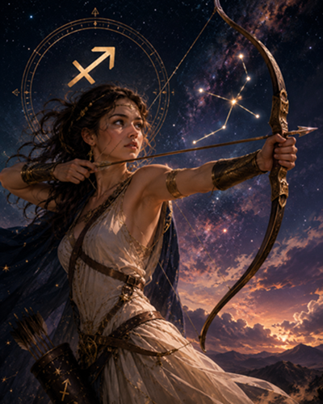

Sagitario
Yo no sabía nada de horóscopos ni de zodiacos ni de nada de éso, pero ella, mirándome a los ojos, me dijo: "soy sagitario." Y lo dijo de tal manera que parecía que fuese algo importante, algo que yo debería tener en cuenta desde ese mismo momento. Entonces la conversación cambió y volvimos a la caótica y desenfadada charla de antes. Pasamos una agradable tarde juntos y quedamos para vernos al día siguiente. Pero yo no podía olvidar sus palabras, ¿cómo debía tomar aquéllo?, ¿qué alcance tenía en nuestra naciente relación?: "soy sagitario." Supuse que lo que parecía un simple comentario dicho así, al alimón, era algo importante; ¿por qué, si no fuera importante, iba ella a dejarlo caer así en la conversación? Me convencí: no era un comentario mondo y lirondo, no, ¡era toda una revelación! Me dije a mí mismo que era un tonto, ¿cómo había podido pasar por alto aquéllo? Sin duda que ella se habría sentido decepcionada al comprobar mi silencio y mi cara de pasmado cuando me hizo ese comentario tan importante. ¡Qué tremendo error por mi parte! Es cierto que yo no sabía nada de nada de todo eso, pero al menos le podía haber dicho mi propio signo...; sí..., quizás era eso lo que ella esperaba que hiciese, estoy convencido y, claro, al no hacerlo, habrá pensado que no me intereso por las cosas que son importantes para ella. ¡He sido un tonto!
Traté de calmarme. "Espera, espera un momento" , me dije, "lo que tienes que hacer es buscar información." Y así lo hice. Pasé toda la noche investigando sobre la cuestión. Aunque es cierto que no llegué a convencerme a mí mismo sobre todo eso de la astrología y el Zodiaco, no es menos cierto que las horas de sueño que perdí por dedicárselas al estudio de lo que podía significar para ella ser sagitario las podía considerar bien empleadas si, en nuestra siguiente cita, mis recién adquiridos conocimientos lograban satisfacerla. Ahora sabía, gracias a la astrología y a mi falta de descanso, cuál era su número de la suerte, las piedras preciosas y el color asociados a ella, qué otros signos se podían llevar bien con ella y cuáles no (afortunadamente para mí, los astros nos eran propicios). Sabía qué flor debía regalarle en nuestra cita al día siguiente y cómo era su personalidad, además de ser consciente de que pronto podría recibir malas noticias relacionadas con el dinero (éso sucedería, lo más probablemente, a mitad de semana, pero no estaba de más tener en cuenta el dato). ¡Lo sabía todo acerca de ella! Ya se sabe, pensé, "la información es poder", y yo ahora estaba sobradamente preparado porque estaba debidamente informado. Era curioso, toda la tarde anterior la habíamos pasado juntos, charlando y riendo, pero yo no había sido capaz de acercarme a ella ni remotamente tanto como lo había hecho desde mi casa y con mi ordenador. "¡Prepárate mi pequeña sagitario! - pensé para mis adentros -, ahora lo sé todo sobre ti..."
Al día siguiente preparé a conciencia nuestra cita. Vestido con el predominio de tonos azules en mi ropa (aunque ciertamente un poco ojeroso por la falta de sueño), me presenté ante ella con un ramito de violetas. Me miró divertida mientras se lo ofrecía y pensé que su sonrisa era una buena señal. Comencé a hablarle de lo mucho que me gustaba viajar para seguidamente, enumerarle mis deportes favoritos. Le hice saber la importancia que tenía para mí que las personas mantuviesen un ético comportamiento y compartí con ella que, inexplicablemente, los jueves eran unos días excelentes para mí, y mucho más en otoño, una estación esta, le comenté, que me encantaba. Además, no dejé de prometerle que, para su cumpleaños, le regalaría una sortija o una pulsera que tuviesen algún zafiro. Por unos instantes tuve la sensación de que le iba a ser muy difícil resistirse a un hombre que se presentaba ante ella conociéndola más que ningún otro de los que hubiese conocido. Me pareció que había triunfado. "¿Pero qué te pasa hoy?" me pregunto con gesto de sonriente extrañeza, "estás un poco raro." Por un instante dudé sobre lo que iba a responderle, pero finalmente creí conveniente explicarle todo acerca de mi pequeña investigación sobre su signo zodiacal. Entonces estalló en carcajadas. Yo no comprendía lo que estaba pasando, ¿a qué venían tantas risas?
"¿Sagitario?" dijo todavía entre risas. "¡Pero si yo soy del signo 'piscis'!" Y volvió a envolverme con su maravillosa risa mientras trataba se secarse las lágrimas que se le escapaban. ¿Piscis? ¿Pero qué era eso de "piscis"? ¿No me había dicho que era "sagitario"? Cuando, por fin, dejó de reirse tratamos de aclarar la cuestión. En fin...; al parecer el barullo existente en el lugar en el que habíamos conversado la tarde anterior me hizo confundir "sagitario" con "sanitario". Ella se estaba refiriendo a su profesión, pues se dedicaba a la sanidad. No protesté cuando me dijo eso de "si es que no me prestas atención cuando hablo", no, no lo hice; estaba demasiado cansado.